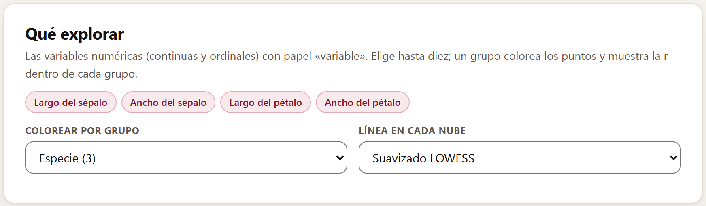
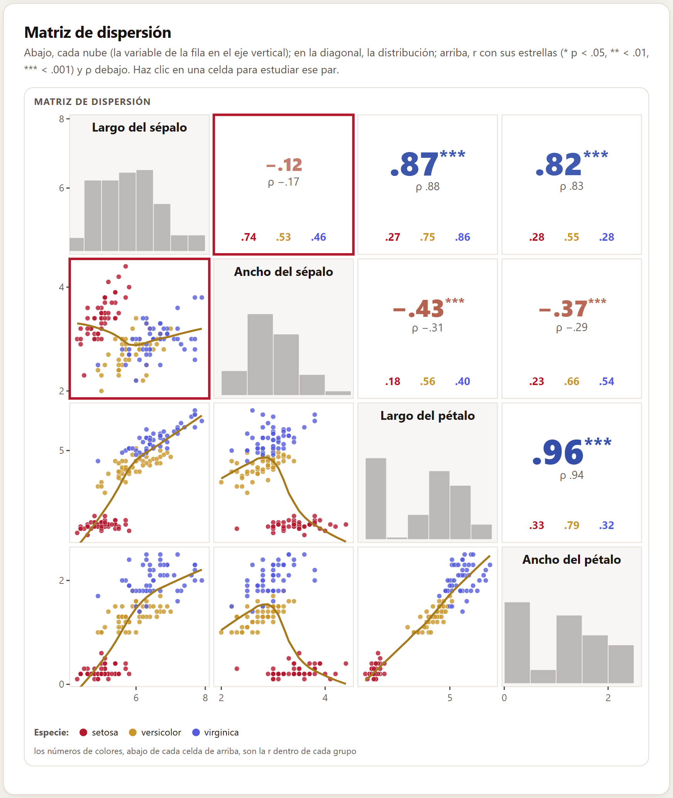
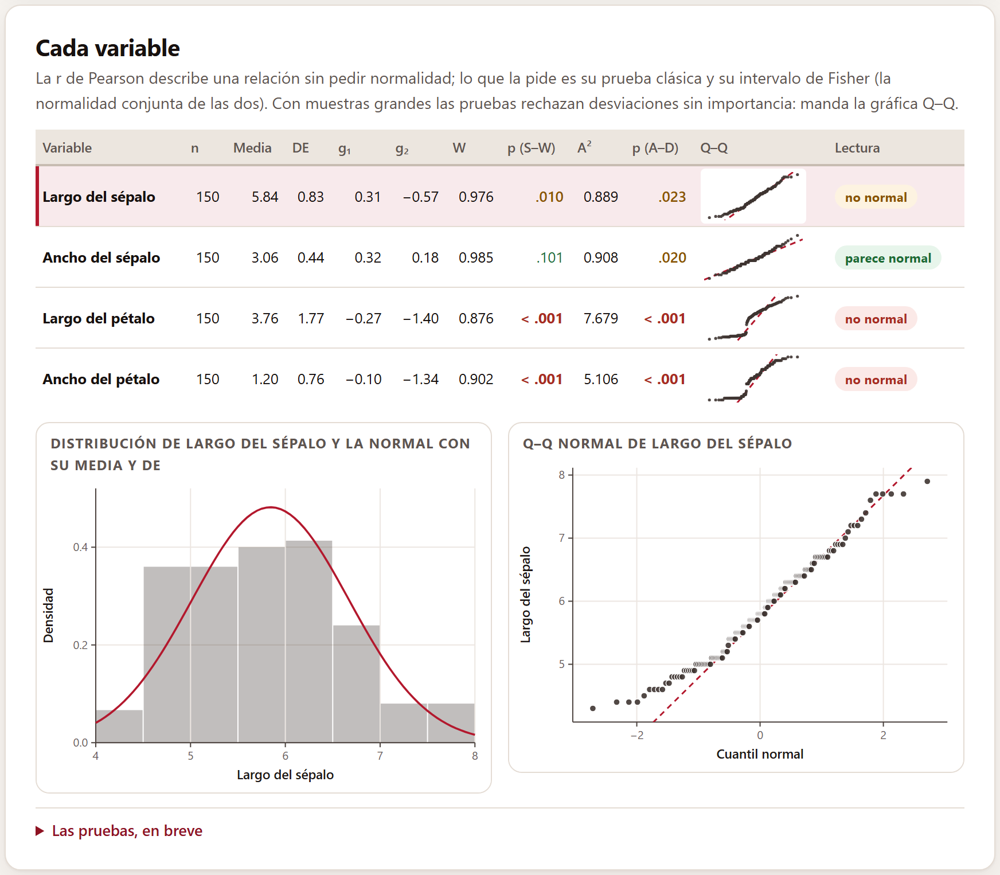
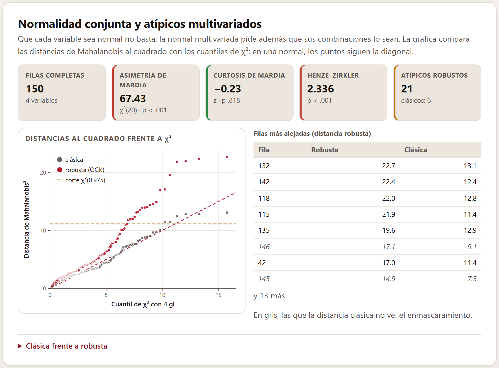
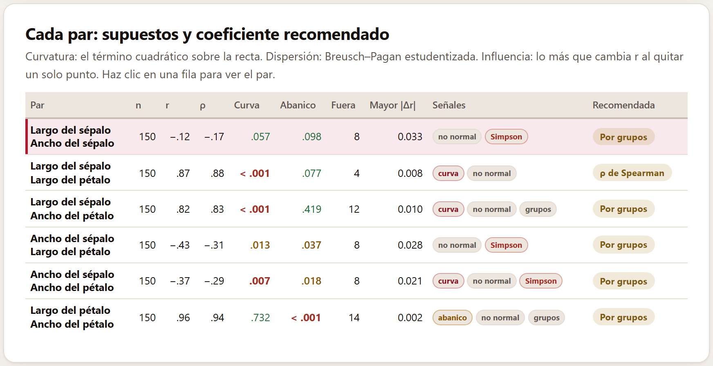
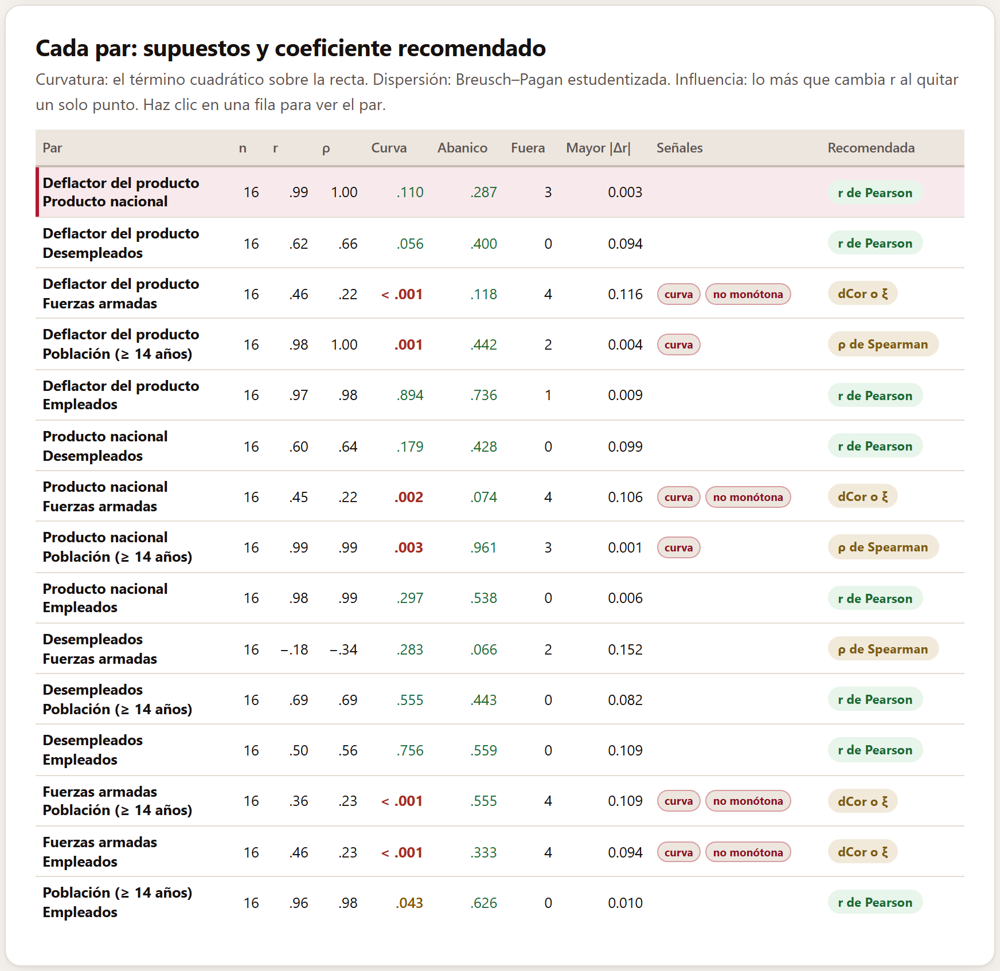
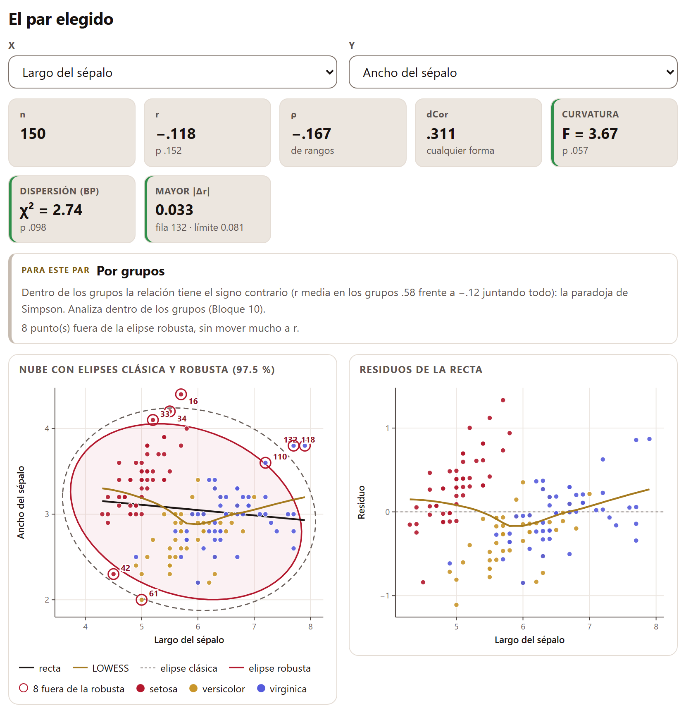
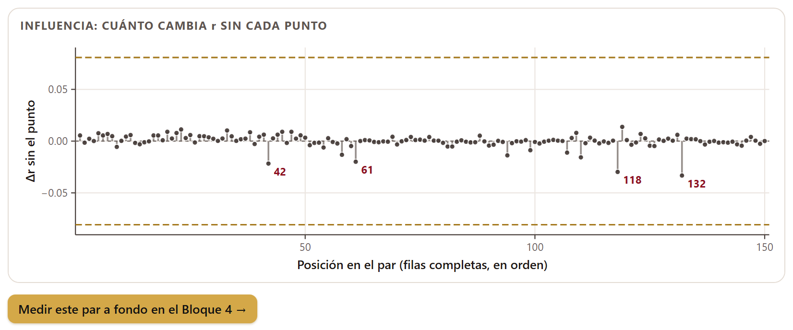
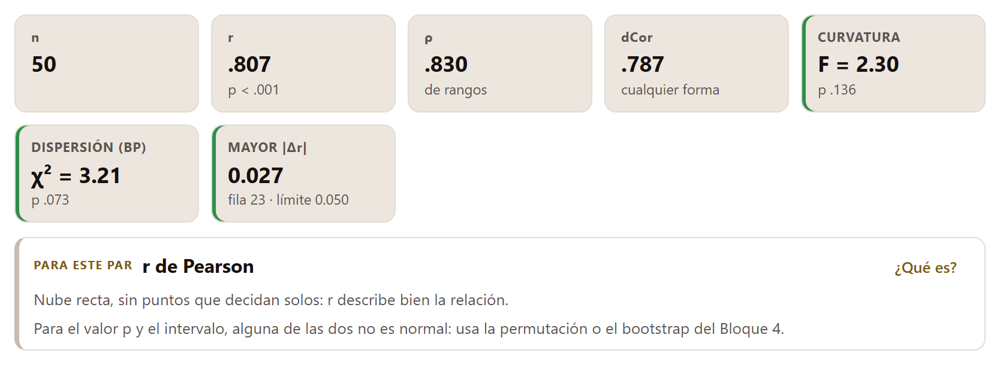

Un coeficiente resume una nube de puntos en un solo número, y ese número sólo es fiel si la nube es como el coeficiente supone. Este bloque mira antes de medir: la forma de cada variable, la del conjunto y la de cada par; busca los atípicos, la curvatura, el abanico, los puntos que deciden solos y los grupos que invierten una relación, y para cada par dice qué coeficiente lo describe mejor y por qué.
El bloque trabaja con las columnas numéricas —continuas y ordinales— que tienen papel de variable en el Bloque 2. No hay que pulsar nada para calcular: cada cambio vuelve a hacer todas las cuentas.
Las variables aparecen como botones. Al abrir unos datos quedan elegidas las ocho primeras; un clic quita o pone una, siempre queda al menos una y caben hasta diez a la vez (para más, la matriz del Bloque 5). Las ordinales llevan la marca ord., porque cambian la recomendación de sus pares.
Colorear por grupo ofrece las columnas nominales o binarias con dos a ocho categorías; si alguna tiene papel de grupo, queda elegida sola. El grupo colorea los puntos de todas las nubes, añade la r dentro de cada grupo y activa la búsqueda de la paradoja de Simpson. Línea en cada nube decide qué se dibuja en las nubes de la matriz: el Suavizado LOWESS (la opción de omisión), la Recta de mínimos cuadrados o Ninguna.

Las cuentas usan siempre todas las filas. Para que la página siga ágil, las nubes de la matriz dibujan a lo más 1 500 puntos elegidos al azar, y una nota lo dice debajo. Con más de 400 filas o más de seis variables aparece una espera mientras se calcula.
Cada par de variables tiene dos celdas. Abajo de la diagonal va su nube, con la variable de la fila en el eje vertical y la de la columna en el horizontal, y la línea elegida. En la diagonal, el histograma de cada variable. Arriba, la r de Pearson con sus estrellas (* p < .05, ** p < .01, *** p < .001) y, debajo, la ρ de Spearman; el color de la r sigue la paleta elegida en el Bloque 1 y su tamaño crece con |r|, de modo que las correlaciones fuertes saltan a la vista. Con un grupo, al pie de cada celda de arriba van, en el color de cada grupo, las r dentro de los grupos.
Un clic en una celda de arriba o de abajo lleva ese par a la sección El par elegido (sección 3.6) y lo enmarca en rojo en sus dos celdas; un clic en la diagonal lleva esa variable a Cada variable.

El histograma del largo del pétalo tiene un hueco: las setosas, de pétalos cortos, quedan aparte de las otras dos especies. Juntando todo, el largo y el ancho del pétalo dan r = .96; dentro de cada especie, .33, .79 y .32. Casi toda esa correlación tan alta viene de que las especies difieren en tamaño, no de que dentro de una especie las flores de pétalos largos los tengan también anchos.
La tabla Cada variable da, para cada una, el número de datos, la media, la desviación estándar (DE), la asimetría g1 y la curtosis en exceso g2, la prueba de Shapiro–Wilk (W y su valor p), la de Anderson–Darling (A² y su valor p), una gráfica Q–Q en miniatura y una Lectura en palabras. Los valores p van en rojo por debajo de .01, en ámbar entre .01 y .05 y en verde desde .05; g1 va en ámbar si pasa de 1 en valor absoluto, y g2 si pasa de 2.
Un clic en una fila (o Intro sobre ella) dibuja debajo el histograma de esa variable con la curva normal de su misma media y DE, y su gráfica Q–Q normal: si los datos fueran normales, los puntos seguirían la diagonal punteada.

La tabla 3.1 dice cuándo aparece cada lectura. Las que no son normales van en rojo si p < .01 y en ámbar si p está entre .01 y .05.
| Lectura | Cuándo aparece |
|---|---|
| parece normal | el valor p de Shapiro–Wilk es de .05 o más |
| se aparta poco (n grande) | p < .05, pero con más de 300 datos, |g1| ≤ 1 y |g2| ≤ 2: la prueba detecta una desviación que no importa |
| sesgada a la derecha · a la izquierda | p < .05 y g1 > 1 · g1 < −1 |
| colas pesadas · colas ligeras | p < .05, |g1| ≤ 1 y g2 > 2 · g2 < −2 |
| no normal | p < .05 sin una asimetría o una curtosis grande que lo explique (por ejemplo, una mezcla de grupos) |
Como resumen de cuánto se alinea una nube, r no supone nada. Lo que pide normalidad —la de las dos variables juntas— es su prueba clásica y su intervalo de Fisher. Y con muestras grandes las pruebas de normalidad rechazan desviaciones sin importancia práctica: manda la gráfica Q–Q. Si dudas, el Bloque 4 da el valor p por permutación y el intervalo por bootstrap, que no dependen de la normalidad.
Shapiro–Wilk (1965) compara los datos ordenados con lo que se esperaría de una normal; W cerca de 1 es normal. Su valor p sigue la aproximación de Royston (1995), válida de 3 a 5 000 datos; fuera de ese recorrido la tabla pone «—». Anderson–Darling mide la distancia entre la distribución acumulada de los datos y la normal ajustada, con más peso en las colas; su valor p es el de Stephens (D’Agostino y Stephens 1986) y necesita al menos 8 datos. La asimetría g1 y la curtosis en exceso g2 dicen en qué se aparta: |g1| > 1 o |g2| > 2 ya importan para la prueba de r.
Que cada variable sea normal no basta: la normal multivariada pide además que todas sus combinaciones lo sean. Esta tarjeta usa las filas completas en todas las variables elegidas (hacen falta al menos dos variables y cuatro filas completas más que variables) y muestra cinco cifras:
Mardia y Henze–Zirkler se calculan hasta con 2 500 filas. El borde de color de cada cifra sigue la escala de los valores p de la tabla anterior: rojo, ámbar o verde.
La gráfica compara las distancias de Mahalanobis al cuadrado de cada fila —la clásica en gris, la robusta en rojo— con los cuantiles de χ² con tantos grados de libertad como variables; en una normal, los puntos siguen la diagonal. La línea punteada horizontal es el corte χ²(0.975). A su lado, la tabla Filas más alejadas da las ocho filas que más pasan el corte robusto, con sus dos distancias, y cuántas más hay. Las filas en gris y cursiva son las que la distancia clásica no ve: el enmascaramiento.

La distancia clásica usa la media y la covarianza de todos los datos, y los atípicos las inflan hasta esconderse: es el efecto de enmascaramiento. La robusta usa el estimador ortogonalizado de Gnanadesikan y Kettenring (Maronna y Zamar 2002) con escalas τ y un repesado que deja fuera lo que pasa del corte, de modo que los atípicos quedan lejos. Mardia (1970) prueba la asimetría y la curtosis multivariadas; Henze y Zirkler (1990) comparan la función característica de los datos con la de la normal, y su prueba es consistente contra cualquier alternativa.
Antes de quitar una fila, mírala: puede ser un error de captura, un código de faltante o una observación real y valiosa. Y cuando se mezclan grupos distintos, como las tres especies de lirios, los «atípicos» pueden ser simplemente un grupo lejos de los demás; en ese caso, lo que corresponde es analizar dentro de los grupos.
La tabla Cada par revisa todos los pares a la vez, cada uno con sus filas completas en las dos variables (por eso su n puede variar). Para cada par da n, r y ρ, y cuatro diagnósticos:
Con ellos, la tabla da las Señales de la tabla 3.2 y una Recomendada: el coeficiente que mejor describe el par. Un clic en una fila lleva el par a la sección siguiente. Un par con menos de cinco filas completas dice «muy pocos pares completos».

| Señal | Aparece cuando… |
|---|---|
| curva | el término cuadrático da p < .01 |
| abanico | Breusch–Pagan da p < .01 |
| no normal | Shapiro–Wilk da p < .05 en al menos una de las dos variables |
| punto influyente | el mayor |Δr| pasa el límite de la sección 3.6 y hay al menos un punto fuera de la elipse robusta |
| pocos valores | una de las dos toma diez valores distintos o menos |
| no monótona | la correlación de distancias pasa a |ρ| en más de 0.25: la nube sube y baja (se calcula hasta con 2 000 pares) |
| Simpson | con un grupo: en al menos la mitad de los grupos con cinco casos o más, r tiene el signo contrario y |r| ≥ .3 |
| grupos | con un grupo y sin Simpson: la r media dentro de los grupos difiere en 0.3 o más de la r juntando todo |
La recomendación sigue un orden fijo: gana la primera regla que se cumple. Las razones del orden son de sentido común: si los grupos cambian la relación, ningún coeficiente calculado juntando todo la describe; si la nube sube y baja, ningún coeficiente monótono la ve; y sólo cuando la nube es recta tiene sentido preguntar por los puntos que deciden solos.
| # | Si… | recomienda |
|---|---|---|
| 1 | hay Simpson o efecto de los grupos | Por grupos: analizar dentro de los grupos (Bloque 10) |
| 2 | la relación no es monótona | dCor o ξ: la correlación de distancias o la ξ de Chatterjee (Bloque 6) |
| 3 | al menos una de las dos es ordinal | ρ de Spearman, o τ-b de Kendall si hay diez valores distintos o menos |
| 4 | hay curva, o r y ρ difieren en 0.1 o más | ρ de Spearman (o τ-b, con pocos valores) |
| 5 | hay un punto influyente | Flexión porcentual, una correlación robusta (Bloque 4) |
| 6 | nada de lo anterior | r de Pearson; si alguna no es normal o hay abanico, con la nota de usar la permutación o el bootstrap del Bloque 4 |
La etiqueta de la recomendación es verde cuando es la r de Pearson sin notas, ámbar cuando es Pearson con una nota y dorada cuando el par pide otro coeficiente.
Las seis series anuales de la economía de Estados Unidos de 1947 a 1962 (figura 3.6) dan las tres clases de respuesta. Ocho pares reciben la r de Pearson. Tres, la ρ: dos porque se curvan, y el de los desempleados con las fuerzas armadas porque r = −.18 y ρ = −.34 difieren en más de 0.1. Y cuatro de los cinco pares con las fuerzas armadas, que crecen de golpe en 1951 con la guerra de Corea y luego bajan poco a poco, son «no monótona»: dCor o ξ.

La última tarjeta estudia un par: el que se eligió en la matriz o en la tabla, o el que se pone en X y Y. La orientación importa para la recta, los residuos y la prueba de Breusch–Pagan, que son de Y sobre X; r, ρ y la recomendación son simétricas.
Siete cifras resumen el par: n (y cuántas filas no tienen el par completo), r con su valor p, ρ, la correlación de distancias dCor («cualquier forma»: en la población vale cero sólo si las dos son independientes), la Curvatura con su F, la Dispersión (BP) con su χ² y el Mayor |Δr| con la fila que lo causa y el límite. Debajo, Para este par da la recomendación con su razón y sus notas; si la recomendación es una medida del catálogo, ¿Qué es? abre su ficha.

Tres gráficas muestran por qué:
El límite de la influencia es, más o menos, un error estándar de r: un punto que por sí solo mueve r más que eso decide demasiado.

Medir este par a fondo en el Bloque 4 → lleva el par al bloque de las medidas de un par, con todos sus coeficientes, intervalos, permutaciones y bootstrap. Allá el coeficiente que se estudia a fondo es, mientras no elijas otro, el recomendado aquí; con Por grupos es la r de Pearson, porque el análisis dentro de los grupos es del Bloque 10.
La velocidad y la distancia de frenado de 50 autos (Ezekiel 1930): r = .807 y ρ = .830; ni curva (p = .136) ni abanico (p = .073), y el punto más influyente, la fila 23, mueve r en 0.027, por debajo del límite de 0.050. La recomendación es la r de Pearson, pero la distancia de frenado no es normal, así que la nota pide el valor p por permutación o el intervalo por bootstrap.

Linealidad. r mide sólo la parte recta de la relación; si la nube se curva pero sigue subiendo, ρ o τ la miden completa; si sube y baja, ni r ni ρ la ven (Anscombe 1973). Dispersión constante. Cuando la nube se abre en abanico, el error estándar de r que da la fórmula clásica es incorrecto; el valor p por permutación y el intervalo por bootstrap no dependen de ello. Atípicos e influencia. Un solo punto puede crear o borrar una correlación; si r cambia más de un error estándar al quitarlo, ese punto decide demasiado. Grupos. Juntar grupos con medias distintas puede inflar, esconder o invertir la relación (Simpson 1951). La app trae esta misma explicación en la nota plegable Por qué cada supuesto, al pie de la tarjeta.
El bloque no calcula nada que se publique: decide qué calcular. Lo que encuentra lo usan el Bloque 4, que abre con el coeficiente recomendado, y los métodos redactados del Bloque 13, que describen las pruebas con que se revisaron los supuestos y citan sus referencias.
| Si la recomendación es Por grupos… | analiza dentro de los grupos en el Bloque 10, y no publiques la r juntando todo sin decirlo. |
| Si es dCor o ξ… | mira la nube: la relación sube y baja. Mídela en el Bloque 6; r y ρ cerca de cero no significan independencia. |
| Si es la ρ de Spearman o la τ-b de Kendall… | úsala en el Bloque 4; si de todos modos informas r, di que la relación se curva. |
| Si es la Flexión porcentual… | busca el punto en la nube y averigua qué es antes de decidir; compara con las robustas del Bloque 4. |
| Si es la r de Pearson con una nota… | da el valor p por permutación o el intervalo por bootstrap del Bloque 4. |
| Si las pruebas de normalidad rechazan con muchos datos… | mira la gráfica Q–Q antes de cambiar de coeficiente. |
Son guías para interpretar, no leyes: lo que sabes del fenómeno, del diseño y de cómo se midió siempre manda.